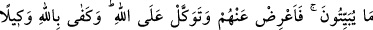
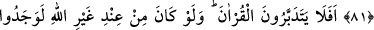
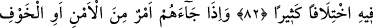
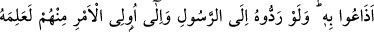
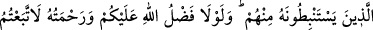
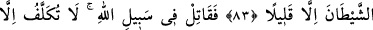
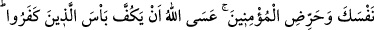
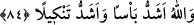

71- Ey îmân edenler! Tedbîrinizi alın; bölük bölük savaşa çıkın, yâhut
(gerektiğinde) topyekün savaşa gidin.
72- İçinizden bazıları vardır ki (cihad konusunda) pek ağırdan alırlar. Eğer size
bir felâket erişirse: «Allah bana lütfetti de onlarla beraber bulunmadım» der.
73- Eğer Allah’tan size bir lütuf erişirse –sanki sizinle onun arasında (zahirî) bir
dostluk yokmuş gibi- «Keşke onlarla berâber olsaydım da ben de büyük bir başarı
kazansaydım!» der.
74- O halde, dünyâ hayatını âhiret karşılığında satanlar, Allah yolunda
savaşsınlar. Kim Allah yolunda savaşır da öldürülür veyâ galip gelirse biz ona
yakında büyük bir mükâfât vereceğiz.
75- Size ne oldu da Allah yolunda ve «Rabbimiz! Bizi, halkı zalim olan bu
şehirden çıkar, bize tarafından bir sahip gönder, bize katından bir yardımcı yolla!»
diyen zavallı erkekler, kadınlar ve çocuklar uğrunda savaşmıyorsunuz!
76- Îmân edenler Allah yolunda savaşırlar, inkâr edenler ise tâğut (bâtıl dâvâlar
ve şeytan) yolunda savaşırlar. O halde şeytanın dostlarıyla savaşın; şüphe yok ki
şeytanın hilesi zayıftır.
77- Kendilerine, “Ellerinizi savaştan çekin, namazı kılın ve zekâtı verin” denilen
kimseleri görmedin mi? Sonra onlara savaş farz kılınınca, içlerinden bir gurup
hemen Allah’tan korkar gibi, hatta daha fazla bir korku ile insanlardan korkmaya
başladılar da «Rabbimiz! Savaşı bize niçin yazdın! Bizi yakın bir süreye kadar
ertelesen (daha bir müddet savaşı farz kılmasan) olmaz mıydı?» dediler. Onlara de
ki: «Dünyâ menfaati azdır, Allah’tan korkanlar için âhiret daha hayırlıdır ve size
kıl payı kadar haksızlık edilmez.»
78- Nerede olursanız olun ölüm size ulaşır; sarp ve sağlam kalelerde olsanız bile!
Kendilerine bir iyilik dokunsa «Bu Allah’tan» derler; başlarına bir kötülük gelince
de «Bu senden» derler. «Hepsi Allah’tandır» de. Bu adamlara ne oluyor ki bir türlü